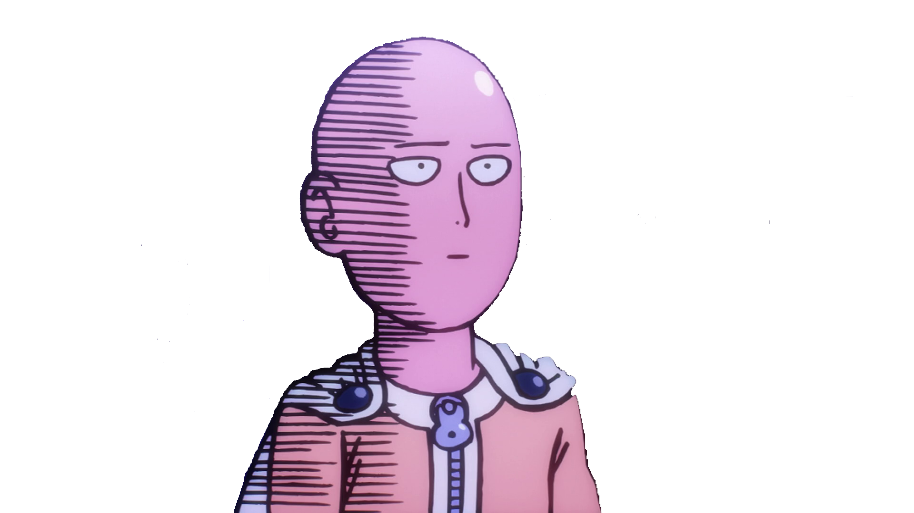

One-Punch Man is an ongoing Japanese superhero parody webcomic created by an author using the pseudonym One which began publication in early 2009. The series quickly went viral, surpassing 7.9 million hits in June 2012. The Japanese shortened name Wanpanman is a play on the long-running children's character Anpanman, wanpan being a contraction of wanpanchi ("one punch"). One-Punch Man tells the story of Saitama, an extremely overpowered superhero, who has grown bored by the absence of challenge in his fight against evil and seeks to find a worthy opponent. A digital manga remake of the series, illustrated by Yusuke Murata, began publication on Shueisha's Young Jump Web Comics website in 2012. The chapters are periodically collected and printed into tankōbon volumes, with twelve released as of December 2, 2016. Viz Media has licensed the remake for English serialization in its Weekly Shonen Jump digital magazine. A television anime adaptation by Madhouse aired in Japan between October and December 2015. It was dubbed in English during the summer of 2016. A second season is currently in the works.
On an Earth-like super-continent planet, strange monsters have been mysteriously appearing and causing disasters resulting in the world's superheroes rising to combat them as well as supervillains. Saitama, the protagonist of the series, is the strongest hero alive in the entire franchise, hailing from the metropolis of City Z and easily defeating monsters and villains with a single punch. However, due to his limitless strength, Saitama has regularly become bored with his power and he constantly tries to find stronger opponents who can present a challenge. Over the course of the series, Saitama encounters various heroes and villains. He gains a disciple in the form of the cyborg Genos and consequently joins the Hero Association in order to gain official recognition. Despite defeating many strong monsters that even the Heroes Association’s top members are unable to defeat, Saitama struggles to gain respect. Also, he never takes the credit for defeating a monster, which instead falls on King, who was promoted to an S-class hero. Most people look down on him due to his plain physical appearance and some accuse him of being a counterfeit hero. Only a small number of individuals in the series recognize his talent and humility towards others, although this later changes when the whole of the Hero Association witness Saitama's true strength.
One-Punch Man had 2.2 million copies in print in November 2013, 3.2 million copies in April 2014,[31] and 4.5 million copies in November 2014. By November 2016, this numbered had grown to 11.1 million copies in print. The series was one of ten nominated for the seventh annual Manga Taishō Awards in 2014. Once released in the United States, both the first and second volumes debuted on the New York Times Manga Best Sellers list, at first and second place, respectively, and stayed there for two weeks. Volume one dropped to second place for the third week, while volume two fell off the list altogether. Volume one was still on the list for a fourth week. The series was nominated for an Eisner Award in 2015.